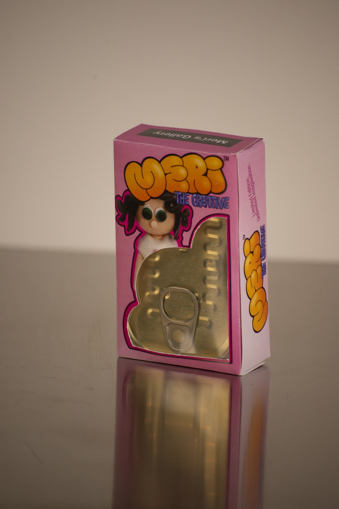
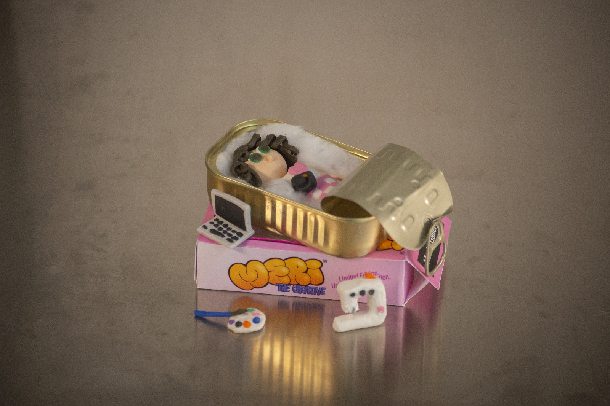
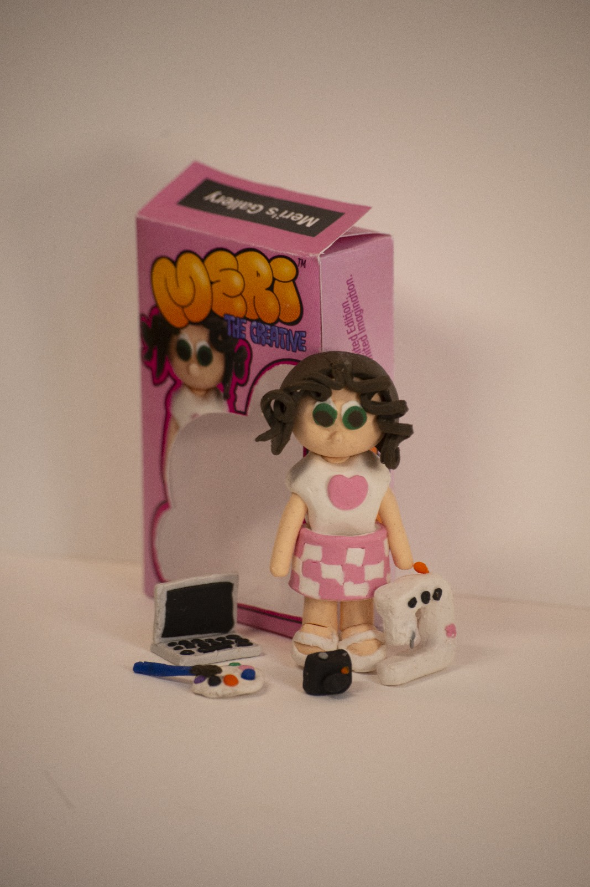
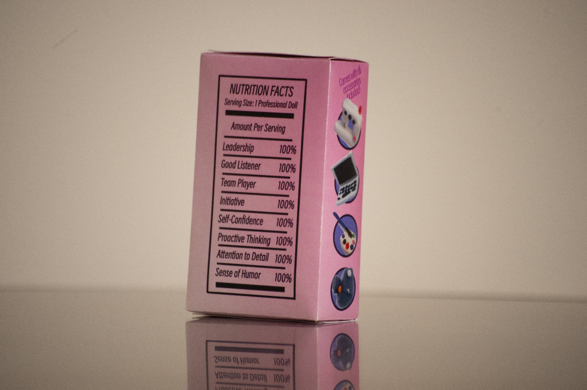
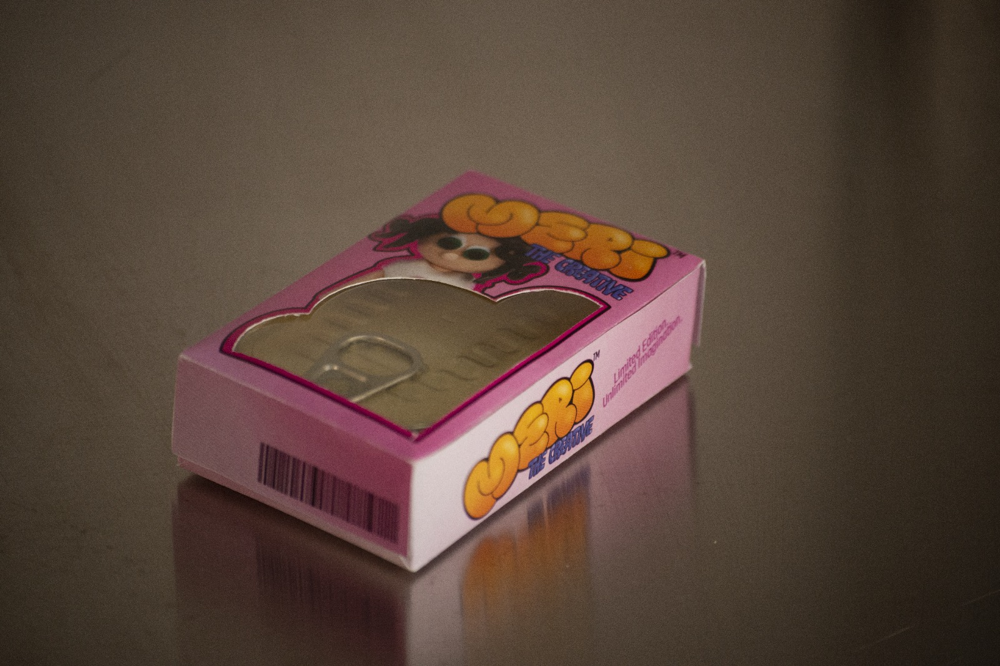
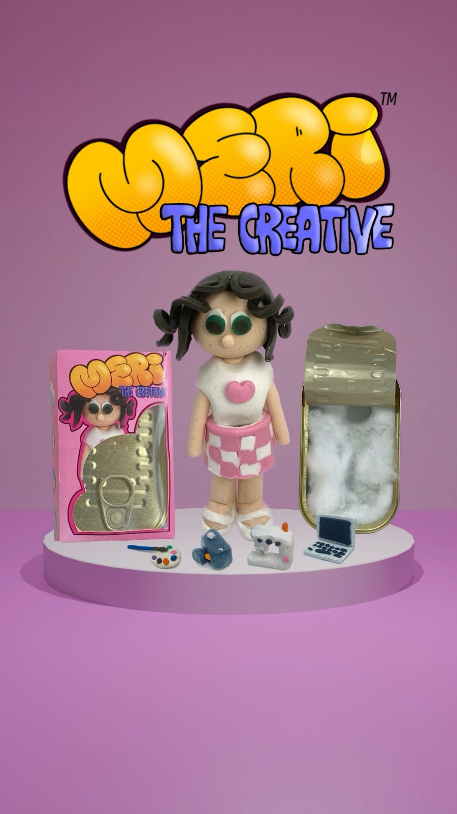

Meri the Creative
Creative Direction · Branding · Design · Storytelling

Meri the Creative es un proyecto conceptual de diseño, branding, dirección creativa y storytelling.
Ante un mercado creativo cada vez más saturado, me pregunté cómo podía destacar entre cientos de candidatos. La respuesta fue tratar mi marca personal como si fuera un producto y desarrollar una campaña completa para venderla.


Diseñé y produje una muñeca coleccionable inspirada en mi perfil creativo, junto con todo su universo visual: el packaging, la identidad y los accesorios, donde cada elemento representa una de mis habilidades creativas.



El proyecto culmina con un spot publicitario que da vida al personaje mediante animación, combinando storytelling, fotografía, vídeo y recursos digitales para construir un universo de marca propio.